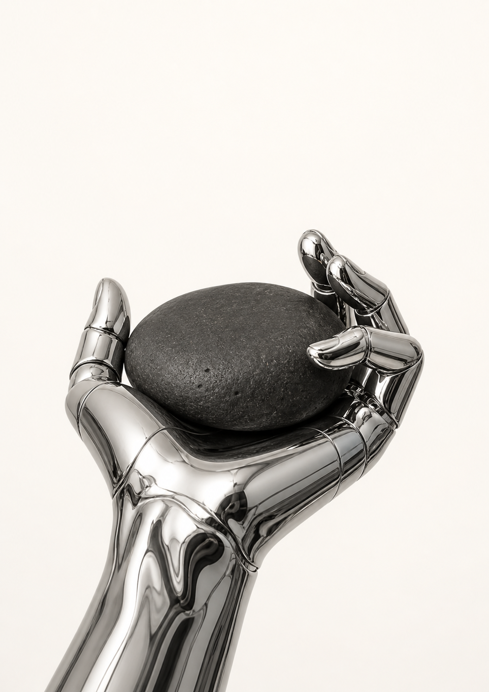
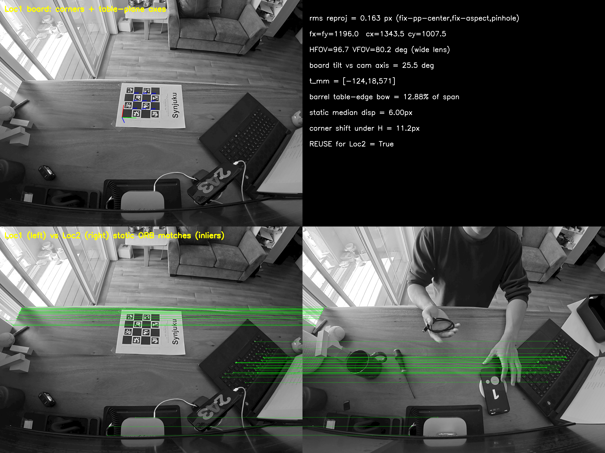
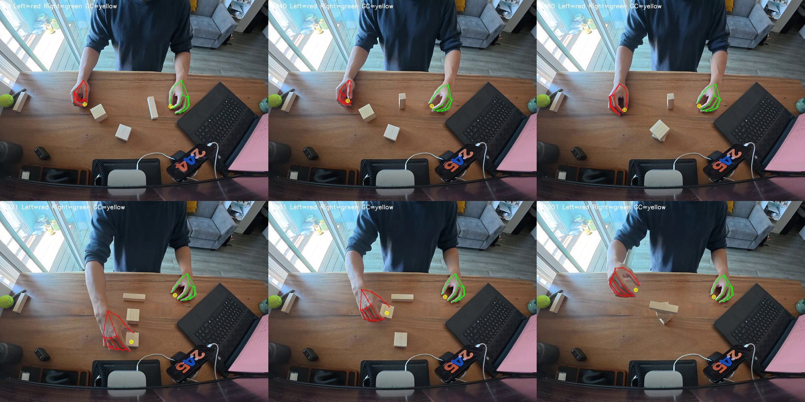
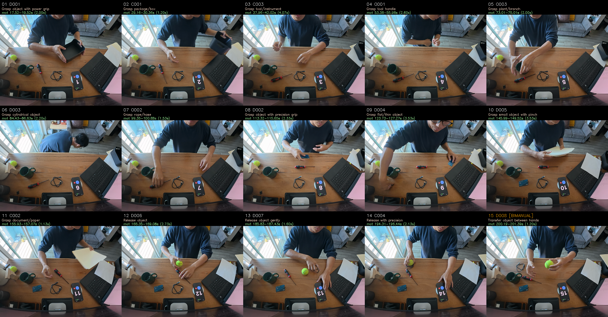
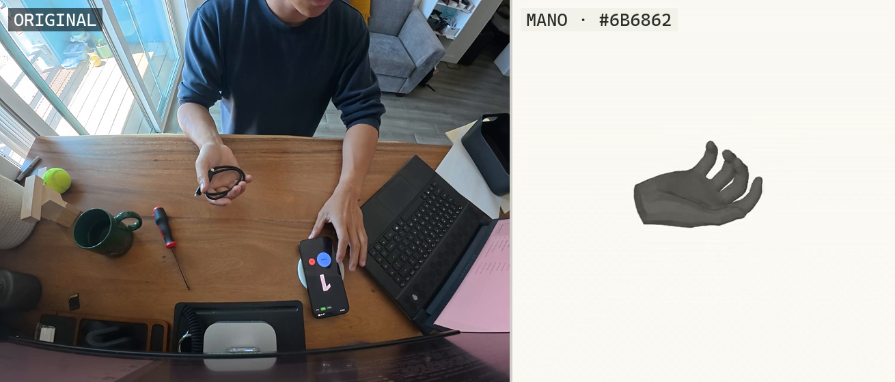
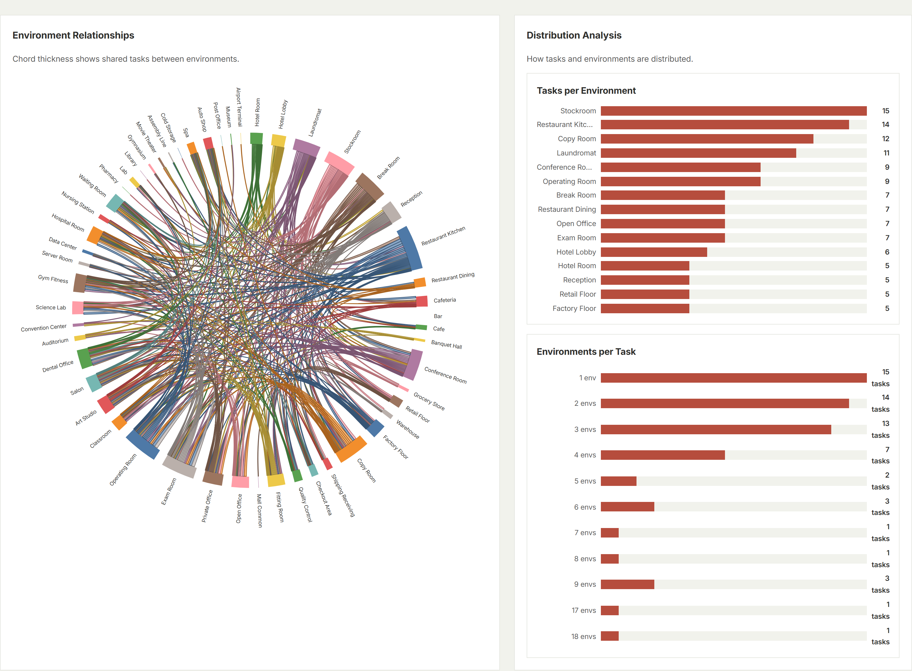
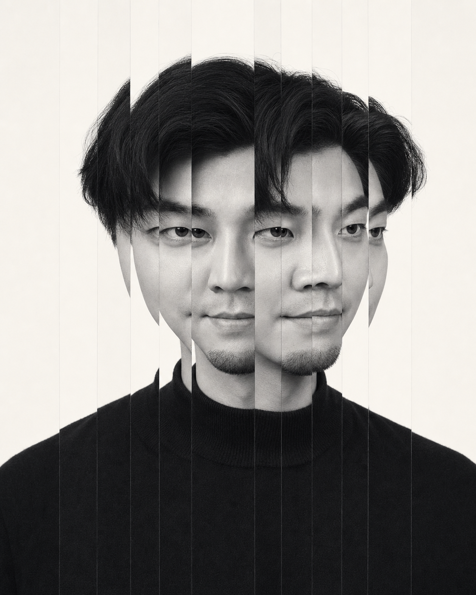
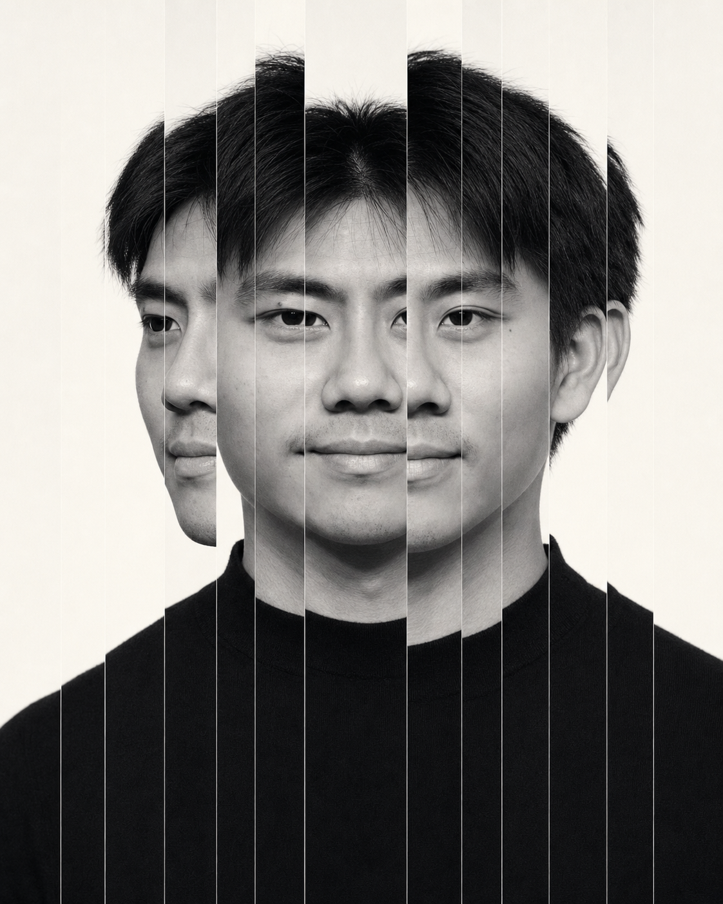

Synjuku builds training-ready human-demonstration data for robot foundation models — the scripted long tail that makes policies generalize, graded before it ships, and delivered LeRobot-native.
Rated Grade 1 — the top quality tier — in a leading robotics lab's evaluation of 70–80 vendors. We build for the tail, and grade every hour before it ships.

Machine intelligence, learning from the physical worldMore data was never the problem. The right data was.
Across the industry, only a small fraction of collected robot data is ever actually trainable. Head data — the common cases — is already a commodity. The value lives in the tail: the rare, awkward, real situations a policy has never seen. We build for the tail at the same cost as the head. We don't compete with the web — we make the chapter the internet skipped.
Not a footage broker — a production system. Coverage is designed before anything is recorded, and graded before anything ships, so every hour you receive is training-ready on arrival.
A task generator enumerates every environment × skill × request and oversamples the long tail. You order coverage — not raw hours — the way you'd write a spec.
A synchronized four-camera rig per episode — egocentric, exocentric, and both wrists — plus IMU, audio, and 2D/3D hand pose. Scripted long-horizon tasks and real, unscripted workdays.
A three-layer quality system: stream integrity → content truth → diversity analysis, with humans in the loop. Every batch ships a quality receipt. You pay for accepted data.
Most vendors sell hours. We sell coverage.
A task generator enumerates every environment × skill × request, filters for diversity — action spread, duration spread, object overlap capped — and drops anything we've already captured. You can order coverage the way you'd write a spec.
And it's real work by real people: a majority of captures are genuine workers on genuine tasks, verified after delivery, across many distinct operators. No staged tasks. No hired actors.
Quality is a property of the pipeline, not a promise on a slide.
A vendor-neutral standard scores every dataset across twenty dimensions — signal integrity, time-sync, hand-pose error, label grounding — each with an A / B / C grade tied to a measured number, assigned from what's verified in the data, not from vendor self-assessment. It grades anyone's data, including a corpus you bought somewhere else.
Every camera file is SHA-256 hashed at capture, re-verified on ingest, and the hash is carried into the delivered files — so you can independently verify any episode back to the original bytes.
We evaluated 70–80 vendors and shortlisted five. Your data is rated Grade 1 — our highest quality tier. Nobody else is there.
Each episode is delivered as aligned layers — not raw video. Vision, motion, language, and geometry, time-synced to a single frame and grounded in the same task.

Egocentric, exocentric, and both wrists — cross-calibrated and audio-synced to within one frame.

Per-frame 21-keypoint hand skeletons — left, right, and grip center — plus IMU motion.

Task → action → primitive segmentation with grounded action language and exact timestamps.

Reconstructed 3D hand mesh for spatial grounding. Calibrated metric depth on the near roadmap.

Every batch reports its spread across environments and tasks — coverage you can audit, not just count.
A hash chain from the original camera bytes into the delivered files — every frame traceable and rights-cleared.
One line, end to end. Delivered in LeRobot v3 and Physical Intelligence's data format, loading out of the box in PyTorch, JAX, or TF, with recommended co-training mixture weights. No augmentation, no synthetic padding.
Continuous 4-camera session on-site. One session, one episode.
Audio-synced to one frame, action-labeled, hand-pose extracted, then graded on 20 dimensions with a diversity report.
A LeRobot v3 bundle with a quality receipt, verifiable back to source bytes.
The tail lives where a policy actually fails.
The richest long-tail data doesn't emerge on its own from scaled deployment — it has to be hunted. We partner with you on a real use case, on site, and run the policy until it breaks: the rare states where it hesitates, slips, or stalls.
Then we capture the corrective demonstrations that fix them — the within-task and across-task novelty no crowd-capture or synthetic pipeline produces. It takes ops taste and effort to find, and it's exactly the work we're built for. You keep the model; we keep you supplied with the trajectories that make it generalize.
No competing foundation model. When we work on deployment, it's a readiness partnership on your use case — never our own robot product. The labs building the models can rely on us as a data partner, not a rival.
Every capture carries operator and site releases and a full provenance chain from the original camera bytes to delivery. SOC 2 readiness, built for how frontier labs buy.
Off-the-shelf rigs, partner headsets, or your own hardware — all normalized into one delivered schema. Neutral on the rig, strict on the output.
Expert-curated, sequenced for the highest learning value. We don't hand you a haystack and call it scale. Better data is better.

Scaled a VLM training-data library from 7K to 6M+ hours and 8-figure revenue in 18 months. Manufacturing & legal routes across SEA and the US.

UC Berkeley Robotics PhD. Built the full capture-to-delivery pipeline — hardware sync, automated QC, and the annotation engine.
Tech investment banking, with semiconductor and mobility industry experience. Portrait TBD
Ex-OpenAI and YC founder. Leads product and the buyer-facing data experience. Portrait TBD
Guidance from operators and researchers across the labs, robot companies, and universities defining Physical AI. Named advisors & portraits — placeholder, to confirm.
A graded sample with annotation and a quality report — enough to run your own eval.
Standing supply, integrated into your training loop with agreed mixture weights.
The full long-tail matrix — every primitive across every environment you need.
Tell us the embodiment and the tasks you're training. We'll scope a graded sample you can evaluate against your own benchmark.